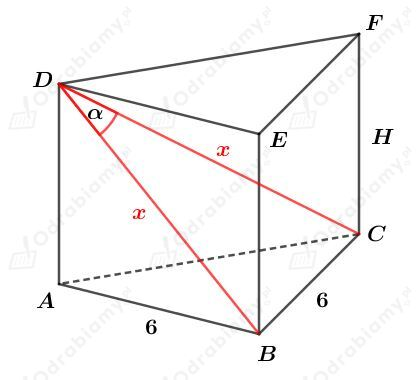
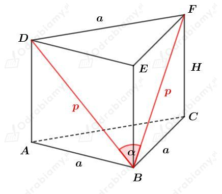
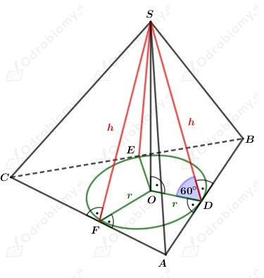
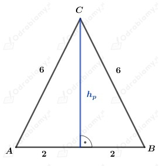
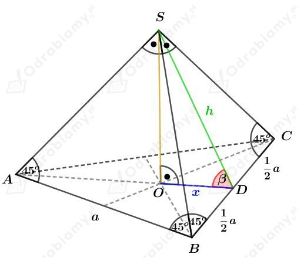
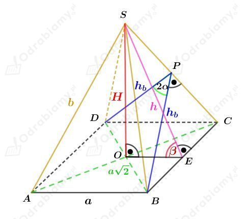
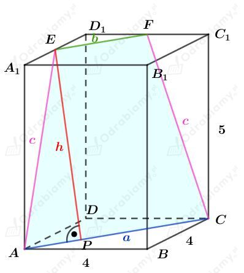
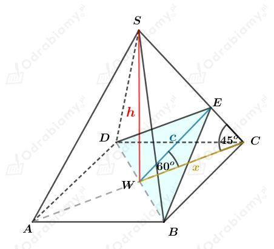
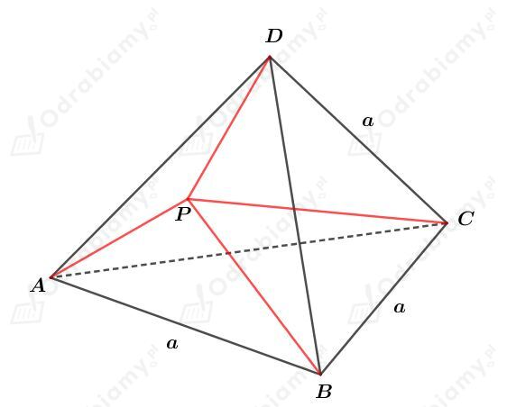

Rysunek:

Wiemy, że
Korzystając z własności trygonometrycznej
mamy:
Korzystając z jedynki trygonometrycznej
mamy:
Korzystając z twierdzenia cosinusów dla trójkąta BCD mamy:
Korzystając z twierdzenia Pitagorasa dla trójkąta ABD mamy:
Wyznaczmy objętość tego graniastosłupa. Mamy:
Wyznaczmy pole powierzchni całkowitej tego graniastosłupa. Mamy:
Rysunek:

Korzystając z twierdzenia cosinusów dla trójkąta BFD mamy:
Korzystając z twierdzenia Pitagorasa dla trójkąta BCF mamy:
Obie strony równości są dodatnie, więc
Wyznaczmy objętość tego graniastosłupa. Mamy:
Zauważmy, że skoro wszystkie ściany boczne ostrosłupa są nachylone do podstawy pod tym samym kątem, to spodkiem wysokości ostrosłupa jest środek okręgu wpisanego w podstawę.
Rysunek:

Komentarze do rysunku:
Punkty D, E, F są spodkami wysokości ścian bocznych opuszczonych na krawędzie podstawy.
Długość r jest długością promienia okręgu wpisanego w trójkąt ABC, a punkt O jest środkiem tego okręgu. Zatem, punkt O jest również spodkiem wysokości tego ostrosłupa.
Trójkąty ODS, OES, OFS są przystające, zatem
Przyjrzyjmy się jeszcze podstawie tego ostrosłupa (trójkątowi równoramiennemu ABC, rysunek poniżej)

Wyznaczmy długość hp wysokości podstawy tego ostrosłupa. Korzystając z twierdzenia Pitagorasa mamy:
czyli
Wyznaczmy pole powierzchni podstawy ABC tego ostrosłupa. Mamy:
Korzystając ze wzoru na pole trójkąta
|
Wzór na pole trójkąta gdzie p jest połową obwodu tego trójkąta, a r jest długością promienia okręgu wpisanego w ten trójkąt. |
otrzymujemy:
Rozważmy trójkąt prostokątny SOD. Korzystając ze związku między długościami boków w trójkącie o kątach 30o, 60o, 90o mamy:
Wyznaczmy pole powierzchni całkowitej tego ostrosłupa. Mamy:
Rysunek:

Zauważmy, że odcinki AS i SC są również wysokościami trójkątów będących ścianami bocznymi, więc
Ponieważ ściany boczne są trójkątami prostokątnymi, to
Trójkąt BDS jest trójkątem prostokątnym równoramiennym, więc
Odcinek x stanowi 1/3 długości wysokości trójkąta równobocznego ABC, więc
Wyznaczmy cosinus kąta 𝛽. Mamy:
Korzystając z tabeli przybliżonych wartości funkcji trygonometrycznych mamy:
Rysunek:

Korzystając z twierdzenia cosinusów dla trójkąta DBP otrzymujemy:
Korzystając ze wzoru na cosinus podwojonego kąta mamy:
Rozważmy ścianę boczną BCS. Pole tej ściany możemy zapisać jako:
oraz
i dzięki temu otrzymujemy:
Podstawiając otrzymane a z twierdzenia cosinusów mamy:
Korzystając z twierdzenia Pitagorasa dla trójkąta BES mamy:
Korzystając z twierdzenia Pitagorasa dla trójkąta OES mamy:
Korzystając z twierdzenia Pitagorasa dla trójkąta AOS mamy:
Wracamy do wielkości b otrzymanej z pola ściany bocznej. Mamy:
Podnosząc obie strony do kwadratu otrzymujemy:
Wyznaczmy sinus kąta 𝛽. Mamy:
Podnosząc do kwadratu obustronnie mamy:
więc
Rysunek:
Korzystając z twierdzenia Pitagorasa dla trójkąta FOS mamy:
Korzystając z twierdzenia Pitagorasa dla trójkąta AOS mamy:
Korzystając z twierdzenia cosinusów dla trójkąta AEC mamy:
Pole jednej ściany bocznej możemy zapisać na dwa sposoby. Mamy:
oraz
Porównując te pola mamy:
Obie strony równości są dodatnie. Podnosząc obustronnie do kwadratu mamy:
Podstawiamy otrzymane wcześniej wartości mamy:
Wyznaczmy objętość tego ostrosłupa. Mamy:
Rysunek:

Punkty E i F są środkami krawędzi odpowiednio A1D1 i D1C1.
Zauważmy, że odcinek a jest przekątną kwadratu o boku długości 4 cm, zatem:
Zauważmy, że odcinek b jest przekątną kwadratu o boku długości 2 cm, zatem:
Korzystając z twierdzenia Pitagorasa dla trójkąta AA1E mamy:
Korzystając z twierdzenia Pitagorasa dla trójkąta APE mamy:
Wyznaczmy pole tego trapezu. Mamy:
Rysunek:

Trójkąt WCS jest trójkątem prostokątnym równoramiennym, zatem
Korzystając z twierdzenia sinusów dla trójkąta WCE mamy:
| Wyznaczmy wartość liczby sin75o. Mamy: Korzystając ze wzoru na sinus sumy kątów mamy: |
Mamy dalej:
Wyznaczmy pole danego przekroju. Mamy:
Rysunek:

Punkt P jest dowolnym punktem leżącym wewnątrz tego czworościanu foremnego.
Niech H będzie długością wysokości tego ostrosłupa.
Zauważmy, że ostrosłup ABCD zbudowany jest z ostrosłupów ABCP, BCDP, ACDP, ABDP.
Wysokości otrzymanych ostrosłupów są odległościami punktu P od ścian bocznych czworościanu ABCD.
Niech h1, h2, h3, h4 będą długościami wysokości ostrosłupów - odpowiednio - ABCP, BCDP, ACDP, ABDP.
Niech Pś będzie polem jednej ściany tego ostrosłupa. Każda ściana ostrosłupa ABCD ma takie samo pole.
Mamy zatem:
co kończy dowód.